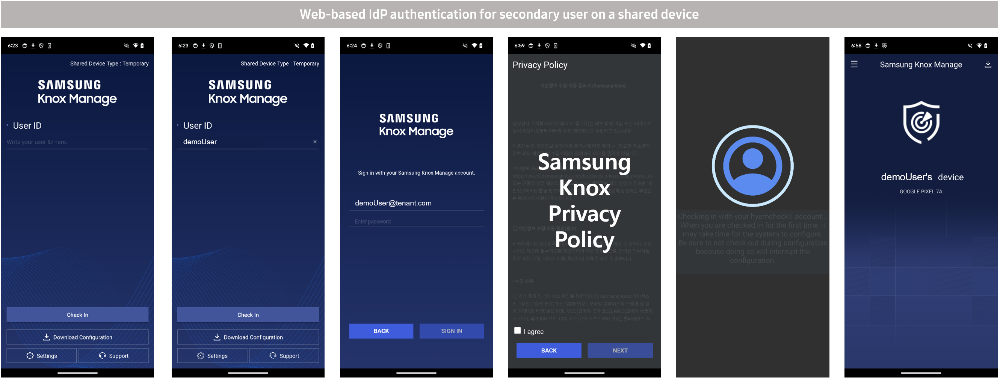
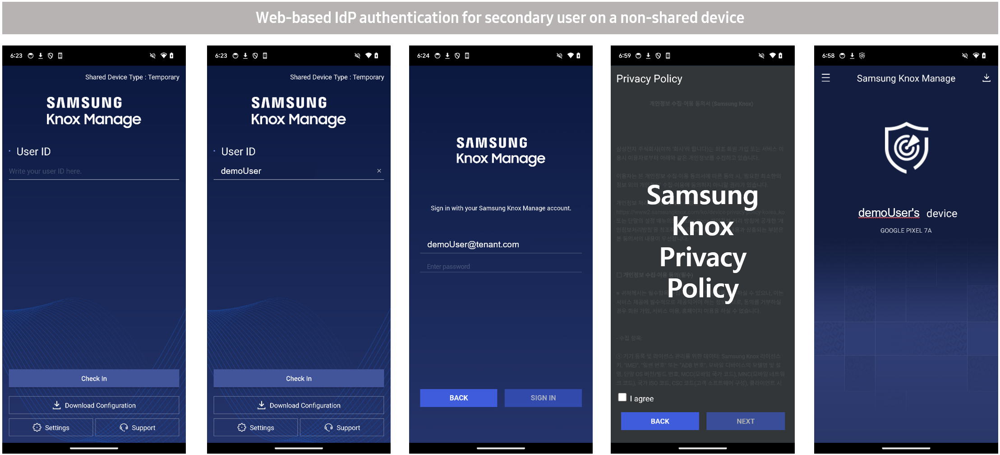
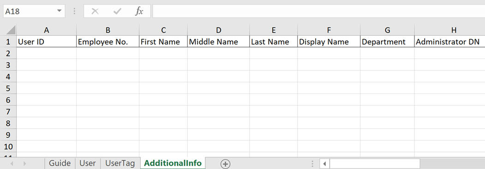

Knox Manage 25.04 release notes (original console)
Last updated April 9th, 2025
New
Introducing dynamic groups (public preview)
You can now create dynamic groups by defining rules based on user or device attributes. Group members are automatically added or removed based on rule criteria. Additionally, profiles, apps, and content belonging to a dynamic group are automatically assigned or unassigned from group members.
You can use the new Rule Builder to make rules from filters, manually configure rules using a combination of attributes and operators, or write rule syntax in MVEL. See Register a group for details.
Policy additions
The following policies are added in the current release. For information about existing policies that have been improved or renamed, see the Updates section of this page.
You can configure policies from Profile > click profile name > Modify Policy. To find a specific policy or sub-policy, start typing its name in Search Policy.
New Android Enterprise policies
- Set Default Password
- Contact Management
- Contact Management > Contact List
See Android Enterprise policies for details.
New Wear OS policies
- Raise Wrist To Wake
- Touch Screen To Wake
- Screen Lock Policies
- Screen Lock Policies > Set Minimum Complexity
See Wear OS policies for details.
New iOS policies
- iPhone Mirroring
- Personalized Handwriting
- Genmoji
- Image Playground
- Image Wand
- Writing Tools
See iOS policies for details.
Command additions
The following device commands are added in the current release. For information about existing commands that have been improved, see the Updates section of this page.
You can access device commands from Device > selected device or devices > Device Command.
New iOS device command
- Play Lost Mode Sound (Supervised)
See iOS device commands for details.
Updates
Policy enhancements
Improvements to Android Enterprise policies
- Screen Lock Policies now features separate device controls for default screen locks (which also allow you to set a default screen lock password) and custom screen locks.
- Access Point Type includes 13 new access point types for APN, and also allows setting multiple values.
- Add URLs to Allowlist or Blocklist now supports adding and deleting multiple URLs.
Improvements to Wear OS policies
- Remapping List now lets you specify the application type.
Policy name changes
The following policies and sub-policies have been renamed to align with the new console (before → after).
Renamed Android Enterprise policies
- Microphone → Use Microphone
- Recording → Record with Microphone
- S Voice → Use S Voice
- Volume Adjustment → Adjust Volume
- Voice Call (except Samsung Device) → Make Voice Calls on Non-Samsung Devices
- SMS (except Samsung Device) → Send Text Messages on Non-Samsung Devices
- Cell Broadcast Setting → Emergency Alerts
- Airplane mode → Turn on Airplane Mode
- Tethering Setting → Share Internet Connection Using Tethering
- Bluetooth Share → Send and Receive Files through Bluetooth
- Printing → Use Printer
- Network Reset → Reset Mobile Data Usage
- Mobile Network Setting → Configure Mobile Network Settings
- Autofill Service → Auto-Completion in Browser
- Play Integrity (SafetyNet Attestation) → Check Devices through Play Integrity
- Verification Interval (days) → Set Time Period Between Checks
- Verification Failure Policy (During Enrollment) → Take Action if Device Fails Check during Enrollment
- Verification Failure Policy (After Enrollment) → Take Action if Device Fails Check after Enrollment
- Verify Apps Using Google Play Protect → App Verification Using Google Play Protect
- App Auto Update → Automatic App Updates
- URL Control Type → Add URLs to Allowlist or Blocklist
- URL Control List → URLs
- Hide URL → Hide URL Address Bar
- Link URL to Other Apps → Web Intents
- File Download → Download Files
- Bookmark → Add Bookmarks
- File Upload → Upload Files
- Cookies → Store Cookies
- Text Copy → Copy Text
- Force Enable Zoom → Force Page Zoom
- Ratio → Default Ratio
- Screen on when Plugged in → Turn Screen on when Plugged in
Command enhancements
Improvements to Android Enterprise device commands
- Push Notification has been improved to render URLs included in the message body as clickable hyperlinks (currently supported for pop-up messages only).
Improvements to iOS device command
- Factory Reset now includes an option to retain the device’s eSIM.
Knox Manage agent enhancements
- (For Android Enterprise agent only) The Knox Manage agent now shows the last time the device connected to the Knox Manage server.
- (For Android Enterprise and iOS agents) The term “Service desk” has been changed to “Support” in the agent menu to align with the new console.
New call information fields for Wear OS
The Device Details screen for Wear OS devices has been improved to include Number of call(s) and Number of missed call(s) fields.
Device unenrollment now allows KAI unenrollment
While unenrolling connected devices from Knox Manage, you can now optionally unenroll the device from Knox Asset Intelligence (KAI). See Unenroll connected devices for steps.
Authentication support for secondary users
Secondary device users of shared and non-shared devices can now check in and get authenticated via web-based IdP authentication. For more information, see Shared Android device quickstart.


Add and view input values during report creation
Previously, you could only view or modify input values after you had created a report. Starting with this release, you can add and view input values during report creation. See Add a new report for steps.
Deleted devices now have IMEI and serial numbers
The Deleted Devices list includes new IMEI/MEID and Serial Number columns. Furthermore, you can search for deleted devices using IMEI/MEID or Serial Number values.
SIM-based devices now have IP addresses
Previously, you could only view IP addresses of Wi-Fi devices. Starting with this release, you can add an optional, exportable column called IP Address (Mobile) to the Device page that lets you view IP addresses of SIM-based mobile devices. You can also view it in Device Details, and add it to Device Basic Information and Device Details Information reports.
Register users in bulk using additional information
The Bulk Manage Users template now includes an AdditionalInfo sheet that lets you specify additional user details. For relevant steps, see Register user accounts in bulk.

Modify settings for multiple apps in a group
You can now update multiple apps while modifying group settings (Group > select group > Application > select apps > Modify Setting).
Get alerts for new device enrollments
You can create email alerts for device enrollments by selecting the new New enrolled devices target event. See Configure emails for audit alerts for steps.
Download configuration options for audit logs
Process information and log data that are typically considered non-essential are now excluded by default, resulting in smaller file sizes. You can still choose to include them by selecting corresponding options in the new Export to Excel dialog. See Download audit log for steps.
Changes to supported platform versions
Supported platform versions are updated as follows (before → after):
- Android 10 and higher → Android 11 and higher
- iOS 15 and higher → iOS 16 and higher
- iPadOS 15 and higher → iPadOS 16 and higher
Additional improvements
- Directory group sync functionality has been optimized to only sync groups and group members that have changed.
- The Audit Log page now includes an Email & SMS event category.
- The App & Service Desk tab on the Basic Configuration page has been renamed to App & Support to align with the new console.
- The Exit Kiosk screen now shows the tenant ID.
Deprecations
Upcoming change to Device Diagnosis Events
Starting with 25.07, Device Diagnosis Events (event ID: DDEV0164) will appear on the Device Log page (History > Device Log). To accommodate this change, any pre-25.07 device diagnostic data will be deleted, so we recommend backing up any data that you wish to retain (go to Device > selected device > Device Details > Device Diagnosis).
See also
On this page
Is this page helpful?